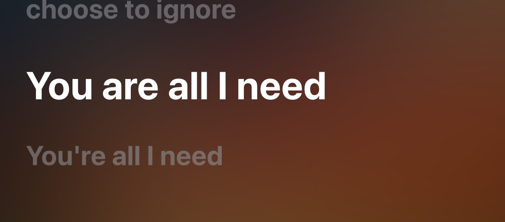
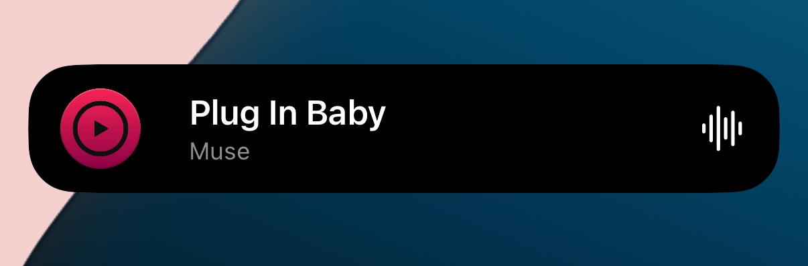
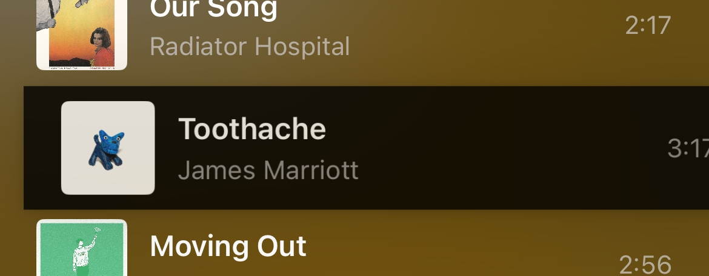
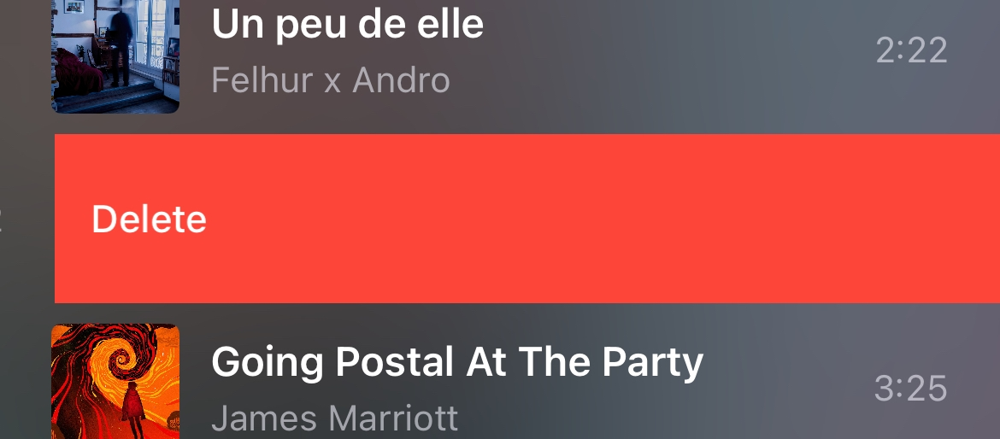

Remote 3.0.0
This next big update changes a lot of the UI, changes most of the app's organization, as well as fixing bugs.
Features

You are all I need
This new version allows lyrics to make their grand return! And forever.

You are here!
View the current track everywhere, any time on your lock screen and Dynamic Island.

I like to move it, move it
You can easily tap & hold on a track to move it from your queue.

A job that slowly kills you
Slide a track off your queue simply by swiping on the left.

Open-Source
Cider Remote's source code is available for everyone, for free. Contributions are also very welcome!